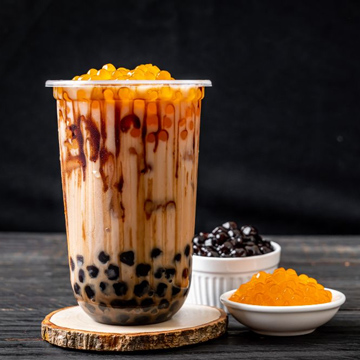

Make the boba. In a large saucepan, bring 8 cups water to a boil over high heat. Add the pearls (or boba) and stir gently until they begin to float to the top. Turn the heat down to medium and cook for 40 minutes, stirring occasionally. Remove from heat, cover, and let sit for another 20 minutes. Drain pearls and transfer to a small bowl. Mix in the honey and fully coat. Set aside for 5 minutes. Make the bubble tea. Divide the pearls into three tall glasses. Add in remaining ingredients: For plain bubble tea: Add tea (or iced tea), ice, and lemon slice. For milk bubble tea: Add tea, milk, and ice. For fruity bubble tea: Blend fruit, milk, honey, and ice in a blender until smooth. Pour into glass. Serve. Add a wide straw, and enjoy!